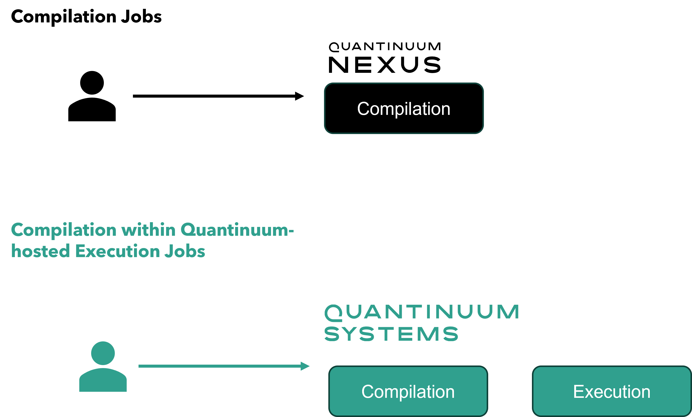

Quantinuum Systems’ Workflow¶
User Authentication¶
Once a user’s email address has been set up with an account on Quantinuum Systems, an invitation email will be sent with a unique signup link to the Nexus Portal. Once registration is completed, users will need to log into the user portal to view and accept our terms and conditions before they can fully access Quantinuum systems. Usage of qnexus requires the end user to authenticate with user credentials.
Once a user’s email address has been set up with an account on Quantinuum Systems, an invitation email will be sent with a unique signup link to the Nexus Portal. To complete registration, users will need to choose how they would like to sign in: either by creating a Quantinuum account or by using third party credentials. Currently Microsoft accounts are the only third party accounts supported. Once registration is completed, users will need to log in to view and accept our terms and conditions before they can fully access Quantinuum systems. Usage of qnexus requires the end user to authenticate with user credentials.
Queue¶
Compilation and Nexus-hosted execute jobs are placed in the Nexus First-in-First-out queue. Quantinuum-hosted execute jobs are routed to the fair queue. Jobs will wait in the queue until execution on the target machine. The fair queue is used to ensure each organization’s queue is represented for machine access per the terms of their contract. The jobs submitted by users in the same organization are executed first by user group priority, then by the user priority, and then by submission order. If user and group priorities are all equal, the oldest job in the queue is always selected first. If users submit a job to a specific machine that is not available, the jobs will hold their position in the organization’s queue until that machine is available. Machines do not need to be online when submitting jobs.
The quantum computers are periodically taken down for upgrades. If a job is submitted while the machine is in an upgrade cycle, it will remain in the queue and run when the machine is back online. Users are encouraged to submit jobs at their convenience.
Compilation¶
Circuits can be submitted to Nexus for server-side compilation. This enables automated translation to a circuit that uses the native Quantinuum gateset. In addition, circuits are automatically optimized for Quantinuum systems and run more efficiently. The default compilation setting is optimization level 2 (allowed values: 0, 1, 2, None).
{kind=link}
Users may also specify further compilation options for execution job submission to Quantinuum-hosted targets. TKET optimization is disabled by default for Quantinuum-hosted execution jobs to prevent unintended modification on the user’s circuit.
Note
pytket-quantinuum documentation also provides information on client-side compilation passes. pytket-quantinuum is a legacy tool. Existing users should transition to qnexus.
Job Batching¶
Quantinuum systems support the ability to run job batches. The batch feature gives users the ability to create “ad-hoc” reservations. Circuits submitted together in a batch will run at one time. The benefit to users is that once a batch hits the front of the queue, jobs in a batch will run uninterrupted until they are completed.
Once a batch is submitted, jobs can continue to be added to the batch, ending either when the user signifies the end of a batch or after 1 minute of inactivity.
Batches cannot exceed the maximum limit of 2,000 HQCs total. If the total HQCs for jobs in a batch hit this limit or a smaller limit set by the user, those jobs will not be cancelled. Instead, they will continue to run as regular jobs in the queue instead of as a batch.
Currently only the Quantinuum-hosted hardware and emulator targets support the batching feature. Batching is not supported on the syntax checkers.
Availability¶
The syntax checkers and emulators are nominally available 24 hours/day to subscribers via queued access. The syntax checkers are free to use while the emulators and quantum computers require HQCs.
Quantum computers are available periodically throughout a calendar month. The calendar of system availability is maintained on the Nexus portal. If needed, users can check a device’s status by first consulting the calendar on the Nexus portal. This provides day-by-day scheduling of machine availability. Calendars are frequently updated to reflect best available information.
To ensure the highest performance of Quantinuum Systems, there are periodically scheduled calibrations and upgrades on the machines. The machines are taken offline to perform the upgrades and conduct verification and validation tests to ensure consistent performance. The performance upgrades are then made available to our users. Typical improvements include upgrades to compute speed, number of available qubits, noise reduction, and overall system reliability.
Tracking Usage with Hardware Quantum Credits (HQCs)¶
Run time can be reasonably predicted using the same formula that defines Hardware Quantum Credits (HQCs). Submitting to a syntax checker does not cost HQCs, but the cost of submitting the job on a quantum computer will be returned with the result for planning purposes. A HQC is defined as:
\(HQC = 5 + \frac{N_{1q} + 10 N_{2q} + 5 N_m}{5000} * C\),
where \(N_1q\) is the number of 1-qubit gates, \(N_2q\) is the number of native 2-qubit gates, \(N_m\) is the number of state preparation and measurement operations in a circuit, including the initial implicit state preparation and any intermediate and final measurements and resets, and \(C\) is the shot count. When a circuit is submitted, the cost in HQCs is returned with the results. For circuits using conditional logic, the charged HQCs include all the gates and measurements across all conditional branches regardless which are executed in the circuit
Note
Nexus-hosted emulators (suffix
EmulatororLE) do not require HQCs, but instead have a quota based on CPU usage in seconds. (link).
Job Status¶
qnexus documentation details compile and execute job monitoring capabilities for all Quantinuum targets (link). The job status is also reported on the Nexus portal.
Note
The pytket-quantinuum documentation details how users can check job status using QuantinuumBackend.
Data Retention¶
Data from jobs are retained in the Nexus portal indefinitely. The data retention window is consistent across all targets: quantum computers, emulators, and syntax checkers.
Note
The legacy Quantinuum user portal has a data retention window of 40 days.
Upgrades¶
Quantinuum will issue Product Change Notifications (PCNs) to customers, coinciding with new upgrades. PCNs will be made commercially available, prior to any significant system changes. All PCNs are available here for customer visibility.